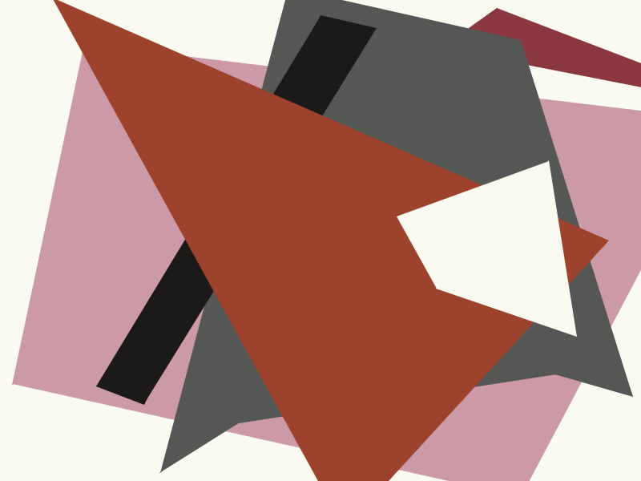
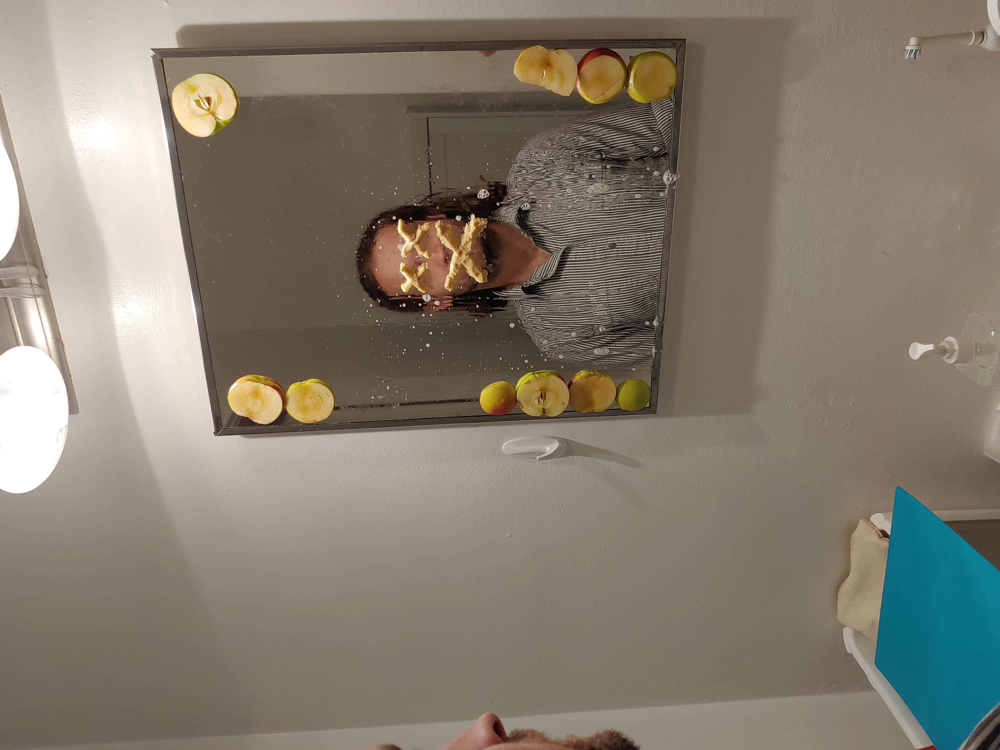

Painting Through the Screen
Painting Through the Screen is a 6-credit 300 level studio course that I developed in collaboration with fellow painter M.E. Sparks. The course is intended to address a gap in discourse between painting and computation that we perceived in our experience both as students and instructors. We felt that there was a lack of criticality around the use of computers in undergraduate-level painting practice and sought to design a course that would draw connections between material and digital practices, while encouraging the development of digital literacy. We currently co-teach Painting Through the Screen at NSCAD University in Halifax, NS.

Historic Reproduction - Lubov Popova
Student example of a hard-coded painting using p5.js.
Painterly Architectonic, 1917, Lubov Popova
Students are encouraged to explore the relationship between digital and material through systems based projects.

A Flower for a Friend
Student example of a hard-coded painting using p5.js.
The curriculum for this class can be generally described with the following statements:
- Looking at painting through the screen.
- Making paintings through screen-based tools.
- Considering painting as screen (or screen as painting).
Student example of manual image glitching.